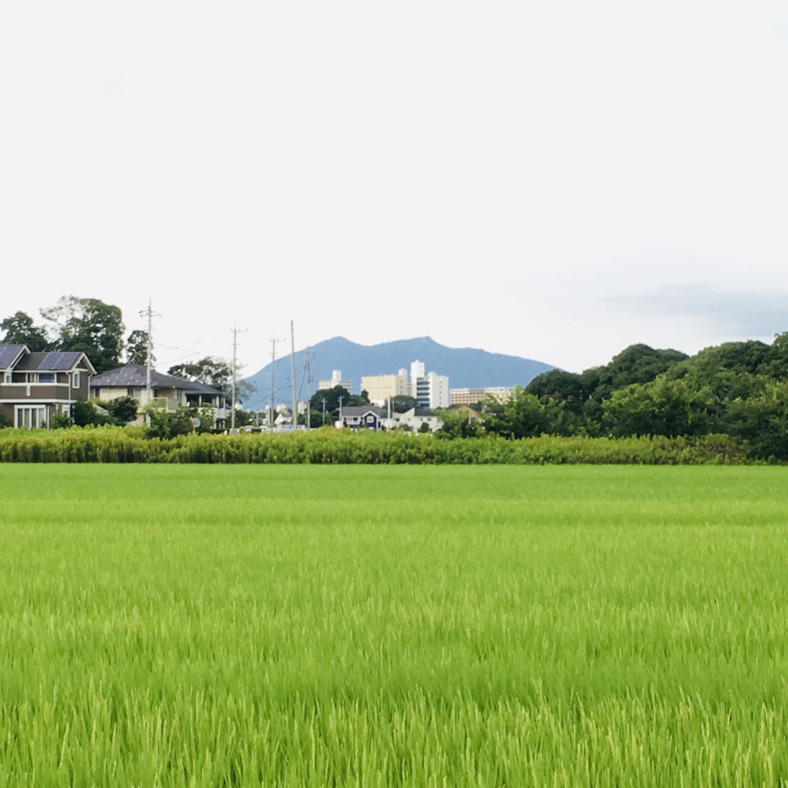
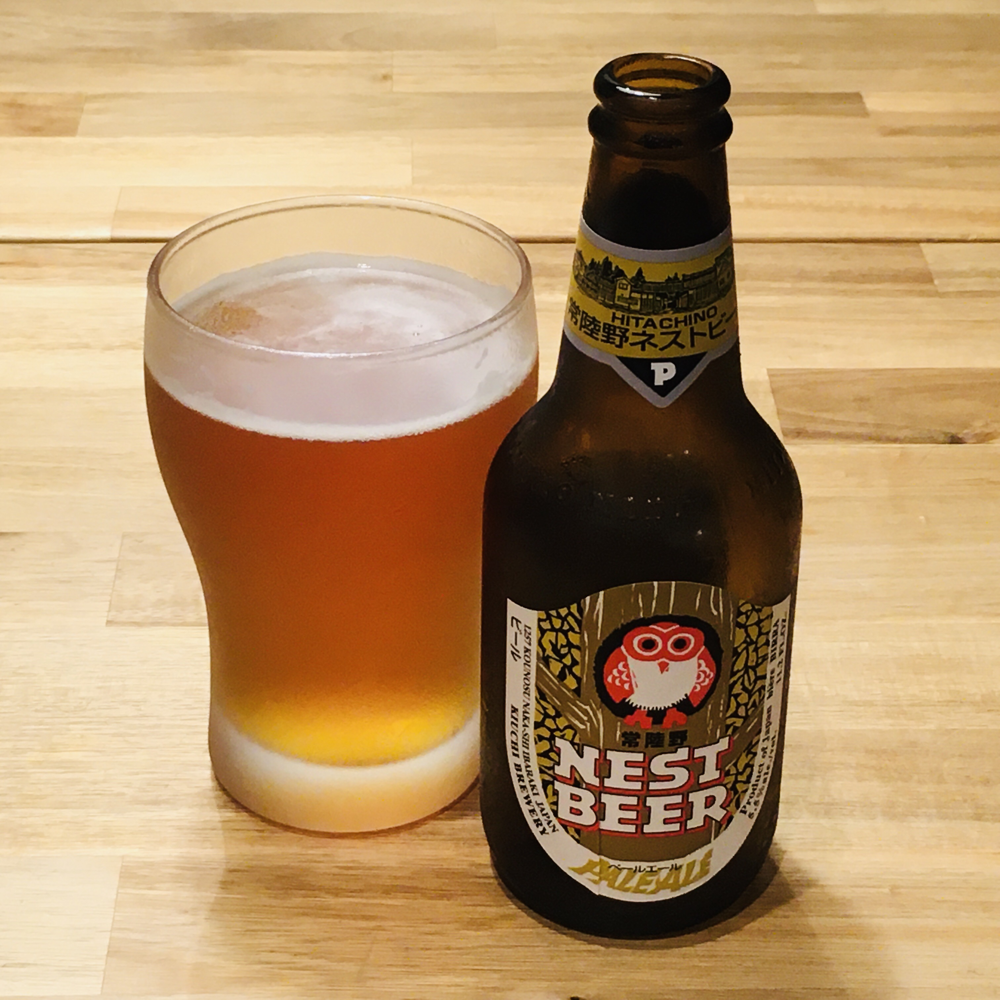

Summer in Japan: rice fields and beer
 Summer rice fields with Mount Tsukuba in the background.
Pagkatapos ng ilang linggong ulan ay summer na naman.
Ano ba ang scenery ng summer sa Japan? Camping sa tabi ng ilog… ligo sa beach… huni ng kuliglig… tunog ng wind chime… hanabi sa gabi…
Ang siyempre, ang berdeng-berdeng palayan.
Kapag nakikita ko ang malawak na palayan sa summer ay naaalala ko ang mga palayan sa aking kilalakihang maliit na bayan sa Pilipinas.
Kung pagkain at inumin naman ay: pakwan… kakigori… malamig na ocha–green o brown (parang hindi yata tama ang malamig na Coke)…
At siyempre, beer.
Bihira lang akong uminom ng beer (at konti lang), kaya “totoong beer” ang binibili ko at hindi yung mas murang happoshu (hindi maganda ang lasa).
Ang karamihang binibili ko na beer ay ang Kirin Heartland. Emerald green na bote, korteng diamond na logo, simpleng design, masarap ang lasa.
Pero kamakailan ay bumibili din ako nitong Hitachino Nest Beer, gawa ng Kiuchi Brewery sa Ibaraki Prefecture.
Nakasulat sa label ng iniinom kong Pale Ale:
A Pale ale which has a rich malt flavor exquisitely balanced with floral notes and bitterness of high quality aroma hops.
“Floral notes.”
Kung umiinom ka dahil gusto mo ang lasa ng beer at hindi para malasing lang, ok itong Nest Beer, medyo mahal nga lang (halos doble ng presyo ng Asahi Super Dry).
Sa pinupuntahan kong maliit na grocery shop ay Pale Ale, White Ale at Weizen lang ang meron. Pero mukhang magandang tikman ang iba pa nilang beer na kagaya ng Espresso Stout (“Please enjoy the balance of its rich taste and coffee flavor”) at Extra High (XH) (“Please enjoy the rich taste, developed by a long maturation period”).
